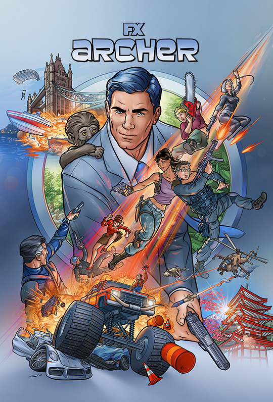
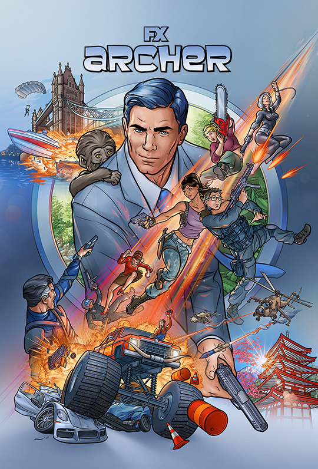

I'm a junior studying Cognitive Science + Design Innovation at UCB. I began teaching myself UX design around a year ago and ever since then I’ve been enjoying the process and have loved every second of it.
I’m fascinated by the intersection between technology, psychology, and design. Cognitive Science allows me to understand the complex processes behind human thought + behavior. Computer Science equips me with the tools to build my desired products. Finally, Design gives me a unique approach to humanize tech and solve human-centered problems.
I'm committed to designing + developing for impact. It’s important to me that I build for causes I’m passionate about, such as economic empowerment, mental health, climate change, diversity + inclusion, equity in education, and civic engagement.
When I’m not designing, I’m playing with my dog, listening to music, taking photos, and promoting Notion to everyone I know — here's mine. I’m also working for the EECS Department as a Student Assistant and I’m involved in Cal Hacks as the Cubstart Team Lead. My background as a Latina, 1st gen, woman in STEM has shaped the work I do and who I am. I strive to empower others like me and uplift marginalized communities through tech.
Thanks for visiting and taking the time to read more about me! Feel free to reach out if you would like to discuss anything, ask me questions, or simply drop in and say hello — I’m always happy to chat!
Sabbia by bnkr44, Fire In The Sky by Anderson Paak, and Tell The Vision by Kanye West

What If...?, Archer, and Squid Game
 
